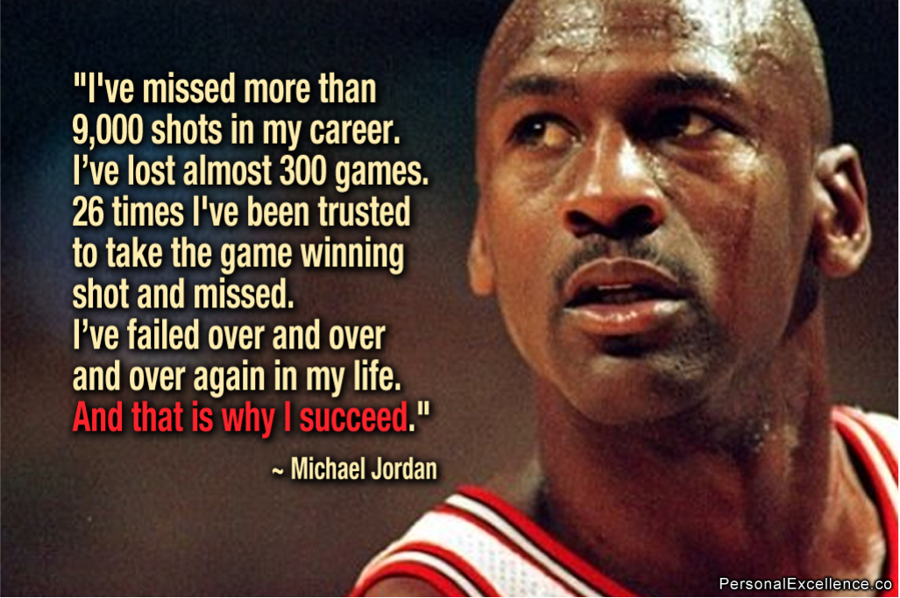

The difficult situation and people
Posted on Sat 31 July 2021 in Journal
Questions
- What’s your difficult situation in your life？
- How to get out of difficult situations?
- Who are the difficult people in your life？
- How to deal with difficult people？
How to deal with difficult situation
- Acknowledge the Situation
- Develop a Plan
- Seek Help When Necessary.
- Change What You Can
- Identify What You Can't Change
- Develop Coping Skills to Deal with Your Feelings.
- Focus on What You Can Gain
How to deal with difficult people
- Be calm
- Understand the person's intentions
- Get some perspective from others
- Let the person know your motivation
- Build a good relationship
- Treat the person with respect
- Focus on what can be actioned upon
- Ignore
- Escalate to a higher authority for resolution
Quotes

In your life, many issues will come, more issues come up in your life means you’re living a more active life. Nothing came up means you’re not living
-- Sadhguru，a spiritual master
Success is not final, failure is not fatal, it is the courage to continue that counts
-- Darkest Hour movie